| A | B | C | D | E | F | G | H | I | J | |
|---|---|---|---|---|---|---|---|---|---|---|
1 | Sr No. | Artwork Image | Artwork Title | Name of the Artist | Medium | Size | Year | Avaibility | A concept note - around 80 words. | Image Include/Not included |
2 | 1) | 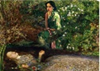 | Ophelia and Amrita (Millais and Amrita Shergill) | Anaushka Rao | Digital | 11.3 in x 16 in | 2024 | For Sale | In Ophelia and Amrita, Anaushka Rao brings two women from different times together. Though they lived far apart, they share similar feelings. Ophelia, seen through a man’s view, and Amrita, seen through her own eyes, stand as equals here. Their emotions connect, sadness, strength, and quiet struggle. The work shows a sense of sisterhood between them. It reminds us that women, across time, can understand each other and find shared meaning in art and life. | Included |
3 | 2) | 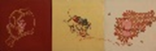 | Untitled | Arunima Sanyal | Acrylic on Canvas (Triptych) | 12 in x 12 in (each) | 2011 | Sold out | In this triptych, Arunima Sanyal reflects on the world around her with care and honesty. She looks at the meeting of tradition and modern life, where old roots now struggle in difficult conditions. The three panels show both natural and man-made forms, creating a quiet conversation. The work feels both gentle and strong. It does not give clear answers, but asks us to think. It speaks of change, memory, and the effort to stay strong in a shifting world. | Included |
4 | 3) | 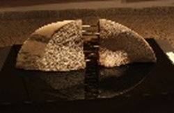 | It's Not Broken | Birchandra Kumar (Veer) | Pink Marble and Metal | 12 in x 27 in x 5 in | 2023 | For Sale | It’s Not Broken shows two halves of pink marble gently pulled apart, yet still held together by metal links. The surface feels rough and quiet, like something shaped by time. The gap between the forms does not speak of loss, but of connection that still remains. It suggests that even when things seem divided, they are not fully broken. The work holds a calm strength, reminding us that bonds can stretch, change, and still endure. | Included |
5 | 4) | 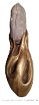 | Life on the Flame | Birchandra Kumar (Veer) | Metal & White Marble | 16 in x 8 in x 9 in | 2018 | For Sale | Life on the Flame shows a smooth white marble form rising from a flowing metal base. The metal looks like a flame, holding and lifting the stone. The contrast between hard marble and soft, moving metal creates a sense of balance. The work speaks about life growing through heat and challenge. It suggests strength, care, and support. The form feels quiet yet powerful, reminding us that even in difficult moments, life can rise, stay steady, and continue to grow. | Included |
6 | 5) | 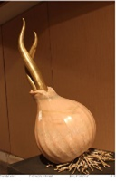 | Powerful Onion | Birchandra Kumar (Veer) | Pink Marble and Metal | 24 in x 12 in x 12 in | 2018 | For Sale | Powerful Onion by Birchandra Kumar (Veer) turns a simple onion into a strong and striking form. Made in pink marble with metal, it shows both softness and strength. The smooth stone body feels calm, while the sharp metal shapes rise with energy. The onion suggests layers of life, emotions, and hidden power. The work invites us to look beyond the ordinary and see depth. It reminds us that true strength often grows quietly from within, layer by layer. | Included |
7 | 6) | 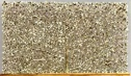 | Rectangular Tree Of Life | Chanchal Chakraborty | Cast brass with Patina finish , lacquered and heat treated | 24 in x 42.126 in | 2024 | For Sale | The Tree of Life by Chanchal Chakrobarty is made in a simple brass frame, yet it feels alive. The branches spread softly, showing growth, memory, and time. The metal holds warmth, as if shaped with care and feeling. Light changes its look through the day, adding quiet movement. The work shows both strength and gentleness. It is not just a form, but a calm reflection on life, change, and the silent beauty of nature and human touch. | Not Included |
8 | 7) | 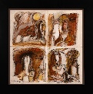 | Untitled | Dhiraj Choudhury | Acrylic on Canvas | 24 in x 24 in | 2007 | For Sale | This untitled painting (2007) by Choudhury is made in four parts, like a series of thoughts. Faces and profiles appear and fade in warm colors like ochre and brown. The figures are simple, with soft lines that show quiet feeling and tension. The layers of paint create a sense of movement. The work feels both calm and deep. It invites the viewer to look slowly and reflect, turning simple forms into a personal and thoughtful visual experience. | Included |
9 | 8) | 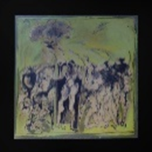 | Untitled | Dhiraj Choudhury | Wash on Paper | 36 in x 36 in | 1984 - 2005 | For Sale | This Untitled (Composition) by Choudhury, made between 1984 and 2005, shows many figures in one space. Painted in wash on paper, the forms appear, fade, and overlap, like moving thoughts. Some figures are still, while others seem active. The lines feel loose and restless, adding a sense of tension. The light background makes the figures look open and fragile. Though on paper, the work feels large and strong. It reflects deep ideas about human life and emotion. | Included |
10 | 9) | 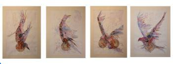 | Untitled | Jitendra Thorat | Mix Media on Paper | 38 in x 24 in (each) | 2024 | For Sale | In Jitendra Thorat’s series, pigeons and women come together as one image. The woman appears like a bird, quiet and broken, yet still trying to fly. The gun appears again and again, showing danger and control. Colours slowly fade into white, creating silence. The final pigeon looks weak but still holds hope. The work speaks about fear and strength together. It shows how women continue to seek freedom, even when facing threat and limitation. | Not Included |
11 | 10) | 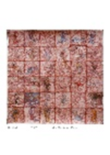 | Untitled | Jitendra Thorat | Mix Media on Paper | 48 in x 48 in | 2016 | For Sale | This untitled work by Jitendra Thorat is made in mixed media on paper. The surface is divided into many small sections, like a grid. Inside each part, figures and forms appear, move, and fade. The red tones create a strong and intense feeling. The lines look restless, showing energy and tension. The work feels like many moments coming together. It invites us to look slowly and find meaning in the layers, movement, and quiet stories within. | Included |
12 | 11) | 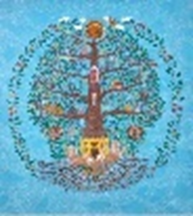 | Home Grown: A Living Map of Hope | Meenakshi Setia | Acrylic on Canvas | 39.5 in x 35.7 in | 2025 | Sold out | Home Grown: A Living Map of Hope by Meenakshi Setia shows a tree full of life and connection. Its branches hold homes, birds, and people living together in balance. The work speaks about care, growth, and shared space. Bright colours and fine details create a feeling of movement and joy. The tree becomes a symbol of hope. It reminds us that when we live close to nature and support each other, life can grow in harmony and possibility. | Included |
13 | 12) | 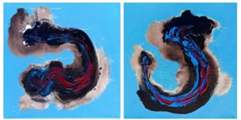 | Flow of Inner Spirit | Meenu Rani | Mixed Media on Canvas | 16 in x 16 in (each) | 2024 | For Sale | Flow of Inner Spirit by Meenu Rani shows movement and emotion through abstract forms. Bold strokes of blue, red, and black flow across a calm background, like energy in motion. The shapes feel free and expressive, suggesting inner thoughts and feelings. Soft edges and strong lines create balance. The two panels connect like a quiet rhythm. The work invites us to feel rather than see, reminding us of the unseen energy that moves within us. | Included |
14 | 13) | 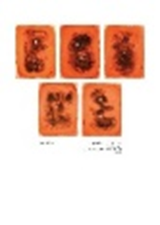 | Impression I,II,III,IV,V | Meenu Rani | Mixed Media | 26 in x 22 in (each) | 2023 | For Sale | This series shows five abstract artworks in warm orange tones with dark, organic shapes. Each piece feels like a different emotion or memory, slowly forming and dissolving. The textures and layers create depth, inviting the viewer to look closely and find their own meaning. Small circular elements add points of focus. Together, the works feel connected yet unique, like moments of thought or feeling captured in time. The simplicity of color and form makes the experience calm, quiet, and reflective. | Included |
15 | 14) | 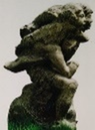 | Brother and Sister | Mukesh Singh Kumar | Black Marble | 36 in x 16 in x 17 in | 2020 | For Sale | This sculpture shows a strong bond between a brother and sister. The figures are close, showing care, trust, and support. Their forms are simple but full of feeling. The use of black marble gives the work a solid and lasting presence. The smooth and rough textures add life to the piece. It feels both powerful and gentle at the same time. The artwork reminds us of family love, protection, and togetherness that stays strong through time. | Not Included |
16 | 15) | 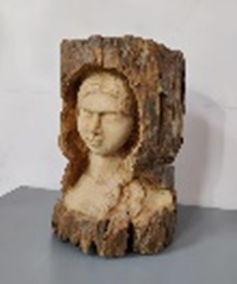 | Grandmother | Mukesh Singh Kumar | Wood | 22 in x 16 in x 16 in | 2022 | For Sale | This sculpture shows a calm and gentle face of a grandmother. The artist uses natural wood to create a warm and soft feeling. The rough outer surface and smooth inner face make a strong contrast. It feels like memory coming out from time. The closed eyes give a sense of peace and wisdom. The work shows love, care, and quiet strength. It reminds us of the deep bond we share with elders and the comfort they bring to our lives. | Included |
17 | 16) | A rhythm of mask | Pallavi Nath | Acrylic on Canvas | 24 in x 24 in (each) | 2020 | For Sale | In A Rhythm of Mask, Pallavi Nath shows change in human, spiritual, and natural life. She is from a village in Assam, and her memories of nature and community inspire her art. The work has four panels, each showing devotion and transformation. Masked performers from Majuli appear as both human and divine. They tell sacred stories and show lesser-known forms of Vishnu. Soft colors and textures create a feeling of ritual. The artwork shows how memory slowly becomes myth and prayer. | Included | |
18 | 17) | 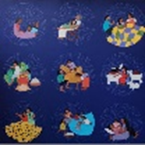 | Energy | Pallavi Nath | Acrylic on Canvas | 3 ft x 3 ft | 2020 | For Sale | In Energy, the mother is not shown as a clear figure but as a feeling that surrounds the family. She is like a soft force of love and care. Bright colors and free strokes show warmth, joy, and life. The work reflects childhood memories of closeness, play, and comfort. The painting feels alive with emotion. It celebrates a mother’s silent presence that supports and nurtures. Here, love is not just seen, it is deeply felt through color and movement. | Included |
19 | 18) | 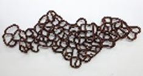 | Silent Network | Rinku Chauhan | Paper Mache, Iron, Rice Paper | 48 in x 108 in x 6 in | 2025 | For Sale | Silent Network shows a web of connected forms, like lines that never end. The loops and links feel like thoughts, relationships, and unseen connections between people. Made with paper mache, iron, and rice paper, the work feels both strong and delicate. Its flowing shape spreads across space, like a quiet map. The sculpture speaks without words, showing how everything is linked. It invites us to think about invisible bonds, shared energy, and the silent networks that shape our lives. | Included |
20 | 19) | 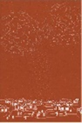 | Resonance of the Infinite | Samiksha Somani | Digital Illustrations using vector techniques | 16 in x 10.6 in | 2025 | For Sale | In A Resonance of the Infinite, Samiksha Somani shows a deep link between earth and sky. A long village scene is drawn with simple lines on a brown background. Above it, stars form similar patterns, connecting both worlds. Inspired by Warli art, the work feels calm and timeless. The repeated shapes show how people depend on each other. The village becomes a network of relationships. The artwork reminds us that strong human bonds are as vast and meaningful as the infinite sky. | Not Included |
21 | 20) | Sankat Mochan II | Santosh Jain | Photography Media on Archival Paper | 16 in x 24 in | 2018 | For Sale | In Sankat Mochan, the red rose in Hanuman’s hand stands for love and devotion. As it falls, it feels both like a blessing and a question. The artwork asks what happens when faith becomes show and feeling replaces truth. The artist mixes respect with quiet critique. The scene feels dramatic yet thoughtful. It shows how myths can change in today’s world. The work invites us to think about belief, where the sacred and the strange often exist together side by side. | Included | |
22 | 21) | 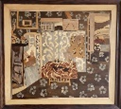 | Flowers Mat | Suresh Kumar M | Wood | 35.5 in x 39 in | 2024 | Sold out | This wooden inlay reimagines Matisse’s L’Intérieur au papier peint in a new way. The colorful collage becomes a work of wood, where grain and texture replace paint. Using careful inlay technique, the artist creates patterns and space with natural materials. The piece connects European modern art with Indian craft tradition. It keeps the warm feeling of a home interior. At the same time, it shows a new rhythm, shaped by patience, skill, and the beauty of handcrafted detail. | Not Included |
23 | 22) | Horizon I ,Horizon II, Horizon III | Toral Pandya | Linocut Painting | 12 in x 12 in | 2025 | For Sale | This abstract painting brings together colour and silence in a calm way. They do not oppose each other but feel connected. The work invites us to think about emotions, memories, and a sense of belonging. Each soft stroke feels gentle and thoughtful. The painting is made with care and compassion. It shows how art can give comfort and hope. Like a quiet shelter, it creates a feeling of home, where we can pause, reflect, and feel at peace within. | Included | |
24 | 23) | 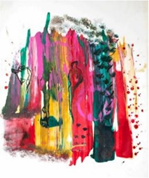 | 55 | Santosh Jain | Acrylic and Mixed Media on Archival | 14 in x 11 in | 2022 | For Sale | 77 is a bright and expressive abstract work filled with bold colors and flowing marks. Layers of red, yellow, green, and pink move across the surface like emotions in motion. The drips and textures feel free and unplanned, yet balanced. Small shapes hint at figures or memories without being clear. The painting invites personal meaning. It feels energetic but also thoughtful. The work shows how color and movement can express feelings that words cannot easily explain or define. | Included |
25 | 24) | 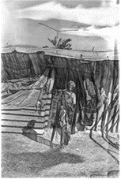 | Amma | Santosh Jain | Mixed Media Printmaking | 23 in x 16 in | 2021 | For Sale | Amma shows a quiet moment from everyday life. An elderly woman stands near a simple home, surrounded by basic objects and soft shadows. The black and white tones create a calm and honest mood. The details feel real and personal, showing strength and dignity in ordinary life. The work reflects care, memory, and time. It invites us to see beauty in simple moments. The artwork gently honors the presence and resilience of a mother figure in daily surroundings. | Included |
26 | 25) | 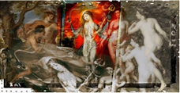 | Divine Radiance | Santosh Jain | Mixed Media on Archival Monet | 28 in x 54 in | 2016 | Sold out | Divine Radiance brings together many images to create a powerful and layered scene. Figures from different times and styles appear side by side, blending past and present. The central form feels strong and glowing, like a symbol of inner power. Warm colors and soft tones create both drama and calm. The work feels spiritual but also human. It invites us to think about beauty, belief, and identity. The painting shows how light and strength can exist within complexity. | Included |
27 | 26) | 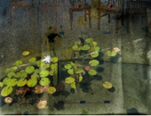 | Listen to your conscience | Santosh Jain | Mixed Media on Archival Monet Canvas | 27 in x 36 in | 2016 | For Sale | Listen To Your Conscience shows a quiet and thoughtful scene. Water, lotus leaves, and soft reflections create a calm space. Faint images of objects and figures appear, like hidden thoughts. The work feels peaceful but also deep. It suggests looking inward and trusting your inner voice. The mix of real and unclear forms shows how the mind works. The painting invites slow thinking. It reminds us to pause, reflect, and listen to our conscience with honesty and care. | Included |
28 | 27) | 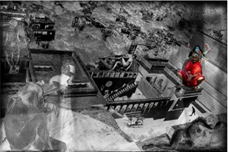 | Power of Kali | Santosh Jain | Mixed Media on Archival | 23 in x 35 in | 2024 | For Sale | Power of Kali shows a strong and intense scene of energy and protection. The image mixes real places with divine presence. The figure of Kali stands out in bright color, full of power and courage. Around her, the world feels heavy and complex. The black and white space adds contrast and depth. The work speaks about strength in difficult times. It shows how divine force can rise within chaos, giving hope, protection, and fearless spirit to face life. | Included |
29 | 28) | 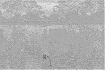 | Riverbank | Santosh Jain | Mixed Media Printmaking on Archival | 23.3 in x 35 in | 2019 | For Sale | Riverbank shows a quiet and soft landscape filled with light and texture. The surface feels calm, like a still moment near water. Faint forms of trees and figures appear gently in the background. A small flower in the front adds focus and life. The pale tones create a peaceful and silent mood. The work invites slow looking and reflection. It speaks about nature, memory, and stillness, where even the smallest detail can hold deep meaning and beauty. | Included |
30 | 29) | 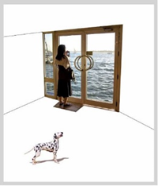 | Silence | Santosh Jain | Mixed Media on Archival Canvas | 35 in x 30 in | 2016 | For Sale | Silence shows a quiet and open space filled with stillness. A woman stands near a door, looking out at the water, lost in thought. A small dog watches from a distance, adding a gentle presence. The empty surroundings create a feeling of calm and pause. The work speaks about solitude, reflection, and inner peace. It invites us to slow down and feel the moment. The painting shows how silence can hold deep emotion and quiet beauty. | Included |
31 | 30) | 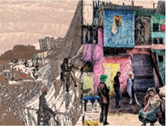 | Stain Stories | Santosh Jain | Mixed Media on Archival Paper | 22.5 in x 30 in | 2019 | For Sale | Stain Stories shows scenes from everyday life in a busy neighborhood. The work mixes black and white with bright colors, creating contrast between past and present. People, homes, and streets come together like layered memories. Each part feels like a small story. The stains and textures add depth and feeling. The artwork reflects life, struggle, and connection. It invites us to look closely and find hidden moments. The piece shows how ordinary places hold many untold stories and emotions. | Included |
32 | 31) | 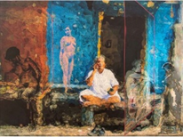 | Stakeholder II | Santosh Jain | Mixed Media on Archival | 27 in x 36 in | 2021 | For Sale | Stakeholder II shows a layered scene of people and spaces connected in quiet ways. A central figure sits calmly, while other forms appear around, like memories or thoughts. The mix of colors and transparent shapes creates depth and feeling. The work reflects daily life, relationships, and shared spaces. It feels both real and dream-like. The painting invites us to think about our role in the world. It shows how different lives and moments are linked, even in silence. | Included |
33 | 32) | 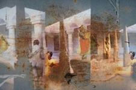 | Untitled | Santosh Jain | Mixed Media on Archival Paper | 20 in x 30 in | 2024 | For Sale | This untitled work shows a layered space filled with light, memory, and presence. Figures appear softly across the scene, like moments passing through time. The columns and open areas create depth and quiet movement. Warm tones and textures give a feeling of age and history. The work feels both real and dream-like. It invites slow looking and reflection. The painting speaks about memory, human connection, and how past and present gently exist together in the same space. | Included |
34 | 33) | 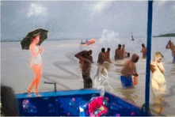 | Untitled | Santosh Jain | Mixed Media on Archival Paper | 20 in x 30 in | 2023 | For Sale | This untitled work shows a river scene filled with people and quiet movement. Some figures stand in water, while others appear softly, like memories. A woman with an umbrella stands apart, glowing gently. The mix of clear and faded forms creates a dream-like feeling. The colors are soft but expressive. The work reflects daily life, rituals, and personal moments. It invites us to look deeper. The painting shows how reality and memory can blend together in one shared space. | Included |
35 | 34) | 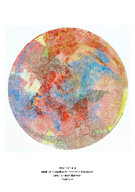 | With In | Toral Pandya | Woodcut Print on Acid free paper | 42 in x 42 in | 2025 | For Sale | With In is a circular abstract work filled with soft layers of color and texture. Shades of red, blue, and yellow overlap like thoughts and emotions. The round shape feels whole and balanced, like looking inside oneself. The print has a gentle, quiet energy. Each layer adds depth, like hidden feelings coming to the surface. The work invites slow reflection. It speaks about inner space, self-awareness, and the beauty of looking within to understand one’s own mind and emotions. | Included |
36 | 35) | 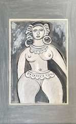 | Untitled | F.N. Souza | Gouache on Paper pasted on board | 21.5 in x 14.5 in | 1950 | Sold out | This untitled work by F.N. Souza shows a strong female figure in simple black and white tones. The bold lines and flat forms give the figure a powerful presence. The large eyes and direct gaze create a feeling of confidence and strength. The style feels raw and expressive. The work moves away from realism and focuses on form and emotion. It reflects the artist’s unique vision. The painting invites us to see beauty, identity, and strength in a new and honest way. | Included |
37 | 36) | 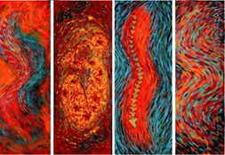 | Abhivyakli | Kanchan Chander | Acrylic oil and sequins on canvas | 48 in x 15 in | For Enquiry | Abhivyakli is a vibrant work full of color, movement, and energy. The long panels flow like waves, with red, blue, and yellow blending together. The patterns feel alive, like emotions moving through the body. Sequins add light and shine, giving the surface a lively touch. The forms suggest rhythm and expression without clear shapes. The work feels bold and free. It invites the viewer to feel rather than understand, showing how art can express deep inner emotions through color and motion. | Not Included | |
38 | 37) | 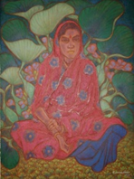 | Girl with water Hyacinth | A. Ramachandran | Oil on Canvas | 46 in x 36 in | 2012 | Sold out | Girl with Water Hyacinth shows a calm young woman sitting among large green leaves and soft flowers. Her red dress stands out with warmth and quiet strength. The colors are rich and glowing, creating a peaceful mood. The setting feels close to nature and full of life. The figure looks thoughtful and still. The work blends beauty and simplicity. It invites us to slow down and feel the gentle connection between the human body and the natural world. | Included |
39 | 38) | 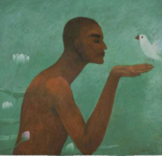 | Untitled | Paramjeet Singh Dogra | Oil & Acrylic on Canvas | 24 in x 30 in | For Enquiry | This untitled work shows a quiet moment between a human figure and a white bird. The figure gently holds the bird, creating a feeling of trust and care. The soft green background adds calm and peace. Simple forms and smooth colors make the scene feel still and thoughtful. The work speaks about connection, kindness, and harmony with nature. It invites us to slow down and feel the beauty of gentle moments and silent understanding between living beings. | Not Included | |
40 | 39) | 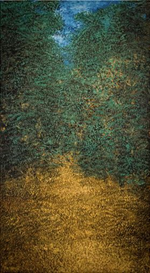 | Untitled | Paramjit Singh | Oil on Canvas | 42 in x 24 in | 2015 | Sold out | This untitled work shows a dense forest filled with rich texture and light. Green leaves and golden tones create a deep and glowing surface. A narrow path moves through the center, inviting the viewer to enter. The painting feels quiet and full of life at the same time. The small brush marks create movement and depth. The work reflects nature’s beauty and mystery. It invites slow looking and calm thought, like walking alone through a peaceful forest space. | Not Included |
41 | 40) | 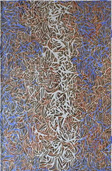 | Lyrical Voices | Prem Singh | Oil on Canvas | 50 in x 35 in | For Enquiry | Lyrical Voices is a dense and rhythmic painting made of many small lines and shapes. The surface feels full of movement, like sound or music flowing across the canvas. Blue, brown, and white colors blend together in a balanced way. A soft central form slowly appears from the patterns. The work feels both busy and calm. It invites close looking and quiet focus. The painting suggests hidden voices and inner thoughts, expressed through repeating marks and flowing visual rhythm. | Not Included | |
42 | 41) | 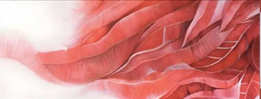 | Ready | Ritu Kapoor Kamath | Oil on Canvas | 36 in x 60 in | For Enquiry | Ready is a soft and flowing painting filled with shades of red and pink. The layered forms look like petals, fabric, or gentle waves. The shapes move smoothly across the canvas, creating a calm rhythm. The work feels delicate yet strong. It suggests growth, change, and a moment before something begins. The light and shadow add depth and warmth. The painting invites quiet feeling, showing how beauty and energy can exist in simple, flowing forms. | Not Included | |
43 | 42) | 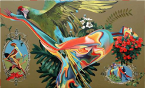 | Live To The Fullest | Sudhir Bhagat | Oil on Canvas | For Enquiry | Live To The Fullest is a bright and lively painting full of color and movement. A bird spreads its wings wide, showing freedom and energy. Flowing shapes and bold colors create a sense of joy and life. Small scenes around add more stories and detail. Flowers and leaves bring a natural feeling. The work feels playful and strong. It invites us to enjoy life fully, follow our spirit, and celebrate beauty, freedom, and the excitement of living every moment. | Not Included | ||
44 | 43) | 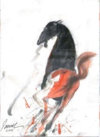 | Untitled | Sunil Das | Mix Media on Paper | 30 in x 22 in | 2005 | Sold out | This untitled work shows a powerful horse in motion. The black and red colors create strong energy and emotion. The loose brush strokes feel fast and alive, like the horse is moving quickly. The form is not fully detailed, but full of life. The white space around it adds focus and freedom. The work feels bold and expressive. It shows strength, movement, and spirit, inviting the viewer to feel the raw energy of the animal. | Not Included |
45 | 44) | 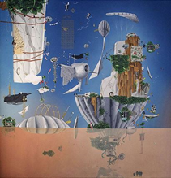 | Dominus Aeris Coloeus XIII | Thukral & Tagra | Oil on Canvas | 60 in x 60 in | 2017 | Sold out | Dominus AeriS Coloeus XIII shows a dream-like world floating in open space. Strange objects, plants, and structures come together in a playful way. The sky is bright blue, giving a sense of freedom and imagination. Some parts look real, while others feel unreal. The work mixes nature, machines, and fantasy. It feels light, curious, and full of ideas. The painting invites us to think about new worlds, creativity, and how different elements can exist together in surprising and imaginative ways. | Not Included |
46 | 45) | 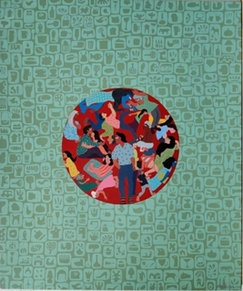 | A bond in a boundary | Pallavi Nath | Acrylic on Canvas | 35 in x 30 in | 2019 | For Sale | A Bond in a Boundary shows a group of people gathered inside a circular space. They sit, talk, and connect with each other in simple, warm ways. Around them, repeated symbols fill the background, creating a sense of structure and limit. The bright colors inside the circle feel lively and full of emotion. The work shows how people build strong relationships even within boundaries. It celebrates togetherness, care, and shared moments that bring comfort, meaning, and a sense of belonging. | Included |
47 | 46) | 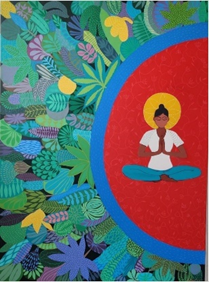 | Energy | Pallavi Nath | Acrylic on Canvas | 4ft x 3ft | 2021 | Sold out | Energy shows a calm figure sitting in meditation, surrounded by bright nature. Green leaves fill one side, full of life and growth. The red circle around the figure feels warm and powerful. The person sits quietly with closed eyes, showing peace and focus. The work balances stillness and movement. It speaks about inner strength and natural energy. The painting invites us to slow down, breathe, and feel the connection between our inner self and the living world around us. | Included |
48 | 47) | 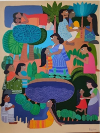 | Yaad Shehar | Pallavi Nath | Acrylic on Canvas | 42 in x 32 in | 2019 | For Sale | Yaad Shehar shows many moments of life together in one space. People sit, talk, care, and rest among trees and water. Each scene feels like a memory from a shared place. The bright colors bring warmth and joy. The simple forms make the stories easy to feel. The work reflects community, family, and daily life. It invites us to remember our own spaces. The painting shows how memories of people and places stay with us and shape who we are. | Included |
49 | 48) | 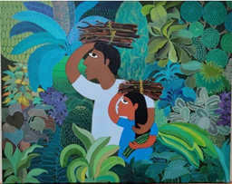 | Untitled | Pallavi Nath | Acrylic on Canvas | 30 in x 24 in | 2020 | For Sale | This untitled work shows two figures moving through a rich green forest. They carry bundles on their heads, suggesting daily work and shared effort. The plants around them are bright and detailed, full of life and energy. The figures feel strong and calm. The work reflects a close bond with nature and simple living. It shows care, balance, and quiet strength. The painting invites us to see beauty in everyday life and respect the connection between people and nature. | Not Included |
50 | 49) | 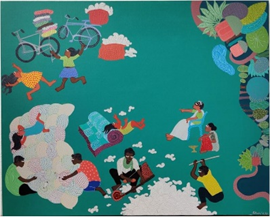 | Untitled | Pallavi Nath | Acrylic on Canvas | 30 in x 24 in | 2020 | For Sale | This untitled work shows a playful and lively scene of people at work and at ease. Figures jump, sit, and move freely across the space. Soft white forms and bright colors create a light and joyful mood. Everyday actions feel full of energy and imagination. The scene looks simple but carries many small stories. The work celebrates daily life, sharing, and togetherness. It invites us to see beauty in simple moments and enjoy the freedom of movement and expression. | Included |
51 | 50) | 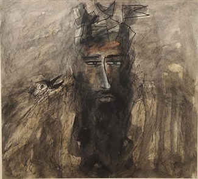 | Sufi - V | Dr. Savindra H. Sawarkar | Ink with Mix Medium | 19 in x 21 in | 2024 | Sold out | Sufi-V shows a deep and thoughtful face emerging from dark, textured lines. The figure feels calm yet intense, like someone in quiet reflection. The rough marks and soft shades create a sense of mystery and inner depth. A small bird near the figure adds a subtle presence. The work feels spiritual and emotional. It invites us to think about the inner journey, silence, and self-awareness. The painting expresses a search for truth, peace, and connection beyond the visible world. | Not Included |
52 | 51) | 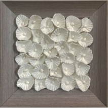 | Untitled | Ritu Kapoor Kamath | Japanese Clay on Canvas | 5 in x 5 in | 2026 | For Sale | This small artwork uses simple white clay forms to create a calm and gentle feeling. The soft shapes look like flowers, quietly arranged in a neat space. Each form is similar yet slightly different, showing beauty in small changes. The clean white color brings peace and stillness. The work invites slow looking and quiet thought. It reminds us that even simple forms can hold grace, care, and meaning in everyday life. | Included |
53 | 52) | 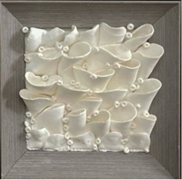 | Untitled | Ritu Kapoor Kamath | Japanese Clay on Canvas | 5 in x 5 in | 2026 | For Sale | This artwork uses soft white clay forms to create a quiet and flowing surface. The shapes look like petals or folded fabric, gently rising and falling across the canvas. Small round details add rhythm and movement. The single color keeps the work calm and pure. Light and shadow bring the piece to life in a subtle way. It invites the viewer to slow down and notice simple beauty, where form, texture, and silence come together softly. | Included |
54 | 53) | 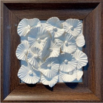 | Untitled | Ritu Kapoor Kamanth | Japanese Clay on Canvas | 5 in x 5 in | 2026 | For Sale | This small artwork shows delicate white clay forms arranged like blooming flowers. Each shape has fine lines and gentle folds, creating a soft and detailed surface. The simple white color gives a feeling of peace and purity. Set within a wooden frame, the work feels warm and balanced. Light and shadow add quiet depth. The piece invites us to pause and enjoy small moments, where simple forms and careful craft come together beautifully and softly in a calm space. | Included |
55 | 54) | Untitled | Ritu Kapoor Kamanth | Japanese Clay on Canvas | 5 in x 5 in | 2026 | For Sale | This artwork shows many soft white clay shapes placed close together like petals. The forms feel gentle and natural, creating a sense of growth and quiet movement. The white color keeps the work calm and pure. The wooden frame adds warmth and balance. Light falls softly on the surface, making small shadows that add depth. The piece invites us to slow down and notice simple beauty, where texture, form, and silence come together in a peaceful way. | Included | |
56 | 55) | Soft layer of time | Rinku Chauhan | Resin, Steel & Board | 60 in x 36 in x 2 in | 2025 | For Sale | This artwork shows a deep blue surface filled with small textured forms. The layers look like marks left by time, slowly building over years. The use of resin and steel gives the piece a strong yet fluid feel. Light moves across the surface, creating soft changes in tone. The work feels calm and endless, like water or memory. It invites the viewer to think about time, change, and the quiet beauty found in slow, unseen processes. | Included | |
57 | 56) | Silent Growth | Rinku Chauhan | Resin & Acrylic | 44 in x 22 in x 4 in | 2026 | For Sale | This artwork shows a cluster of rounded forms growing closely together. The deep red color gives a feeling of life, energy, and intensity. Each small shape looks unique, yet all are connected, suggesting slow and quiet growth. The textured surface invites closer looking and touch. Made with resin and acrylic, the work feels both organic and strong. It speaks about natural processes that happen silently over time, reminding us that growth is often unseen but always present. | Not Included | |
58 | 57) | Silent Cells | Rinku Chauhan | Resin & Acrylic | 38 in x 38 in x 2 in | 2026 | For Sale | This artwork is made of many panels placed together, forming a larger whole. Each panel shows small textured shapes that look like cells or living forms. The green and dark tones create a calm and natural feeling. The repeated patterns suggest connection, growth, and balance. Made with resin and acrylic, the surface feels rich and layered. The work reminds us that life is built from small parts, quietly working together to create something complete and harmonious over time. | Included | |
59 | 58) | Imprint of Nature | Rinku Chauhan | Iron & Resin | 84 in x 18 in x 18 in | 2025 | For Sale | This tall sculpture shows a strong vertical form covered with textured, organic shapes. The surface looks like layers formed by nature over time. Deep blue tones add a feeling of depth, calm, and mystery. Made with iron and resin, the work feels both solid and alive. It stands like a quiet memory of natural growth. The piece invites us to reflect on nature’s slow process, where time leaves marks that shape beauty in silent and powerful ways. | Included | |
60 | 59) | Once Upon A Time | Santosh Jain | Mixed Media on Archival Monet Canvas | 25 in x 18 in | 2016 | For Sale | This artwork shows a quiet scene by water, where past and present seem to meet. Old architecture, figures in the water, and people in the foreground create a layered story. The image feels like a memory, soft and slightly dream-like. Light and reflection add depth and emotion. The work invites the viewer to think about time, history, and human connection. It gently reminds us that stories from the past continue to live within our present moments. | Included | |
61 | 60) | Leisure | Santosh Jain | Mixed Media on Canvas | 22 in x 20 in | 2016 | For Sale | This artwork shows a quiet moment of rest and freedom. A person floats in water, holding a drink, while small creatures move around gently. The blue tones create a calm and dreamy feeling. The scene feels playful but also thoughtful. It speaks about taking time to relax and enjoy simple pleasures. The mix of real and imagined elements adds depth. The work invites the viewer to slow down, reflect, and connect with nature and inner peace. | Included | |
62 | 61) | Pleasure | Santosh Jain | Mixed Media on Canvas | 22 in x 20 in | 2016 | For Sale | This artwork shows a calm and dreamy moment in water. A figure floats peacefully, surrounded by soft blue tones and gentle light. Small details like flowers and creatures add a sense of imagination. The scene feels quiet, yet full of life. It speaks about simple joy, rest, and being free. The mix of real and dream-like images creates a gentle mood. The work invites the viewer to slow down, feel relaxed, and enjoy a peaceful state of mind. | Included | |
63 | 62) | Untitled | Santosh Jain | Mixed Media on Archival | 20 in x 30 in | 2026 | For Sale | This artwork shows everyday life in a raw and honest way. The black and white tones create a strong and serious mood. Figures are busy with work, while other small images appear around them like memories or thoughts. The scene feels both real and layered. It speaks about struggle, labor, and human connection. The mix of drawing and photo-like forms adds depth. The work invites the viewer to look closely and think about stories hidden in simple moments. | Included | |
64 | 63) | Illusion | Santosh Jain | Mixed Media on Canvas | 22 in x 33 in | 2016 | For Sale | This artwork shows a dream-like scene in water. A figure floats while bright fish and objects move around. A large plate with flowers covers the body, creating a strange and playful image. The blue space feels calm but also confusing. It speaks about illusion, desire, and how we see reality. The mix of real and unreal elements adds mystery. The work invites the viewer to question what is true, and to explore hidden thoughts and feelings. | Included | |
65 | 64) | Her Presence, His Presence | Santosh Jain | Mixed Media on Archival | 23 in x 35 in | 2025 | For Sale | This artwork shows a quiet and emotional indoor scene. A woman sits alone, eating, surrounded by shadows and layered images. Faint figures and newspaper textures create a feeling of memory and presence. The space feels heavy, yet intimate. It speaks about loneliness, daily life, and unseen connections. The mix of real and ghost-like forms adds depth. The work invites the viewer to think about who is present, who is absent, and the silent stories within ordinary moments. | Included | |
66 | 65) | Beyond the Visible Order | Amit Kalla | Acrylic on Canvas | 44 in x 78 in | 2025 | For Sale | This artwork is full of bright colors and flowing shapes. Forms move freely across the canvas, creating a sense of energy and rhythm. There is no fixed image, but many ideas come together. The work feels playful yet thoughtful. It speaks about what lies beyond what we can clearly see. Layers of lines and colors create depth and motion. The painting invites the viewer to explore, imagine, and find their own meaning within this lively and abstract world. | Included | |
67 | 66) | Oneness | Amit Kalla | Acrylic on Canvas | 44 in x 78 in | 2025 | For Sale | This artwork is filled with bright colors and bold shapes. Different forms come together in a lively and balanced way. Each part looks separate, yet all connect as one whole. The painting feels energetic and joyful. It speaks about unity, harmony, and togetherness. Lines and colors move freely, creating rhythm and flow. The work invites the viewer to see how different elements can exist together, forming a single, strong and beautiful expression of oneness. | Included | |
68 | 67) | Spectrum of the Unseen | Amit Kalla | Acrylic on Canvas | 44 in x 78 in | 2025 | For Sale | This artwork shows a bright and lively world of shapes and colors. Lines move in many directions, creating a feeling of motion and energy. The forms look abstract, yet they suggest hidden images. The painting explores what we cannot easily see. It speaks about imagination and deeper vision. Layers of color add richness and depth. The work invites the viewer to look beyond the surface and discover new meanings inside this vibrant and expressive composition. | Included | |
69 | 68) | Interbeing | Amit Kalla | Acrylic on Canvas | 44 in x 78 in | 2025 | For Sale | “Interbeing” is a bright and lively work that shows how everything is connected. The artist uses bold colors and flowing shapes to create movement and energy. Forms overlap and blend, suggesting that nothing exists alone. Each part depends on another. The painting feels playful but also thoughtful. It invites the viewer to look closely and find links between forms. This work speaks about unity, balance, and shared existence in a simple but powerful visual language. | Included | |
70 | 69) | Untitled | Chameli Ramachandran | Chinese Ink & Watercolour on Paper | 15 in x 11 in | 2020 | For Enquiry | This delicate painting shows a soft pink flower in full bloom. The artist uses gentle lines and light color to create a calm and peaceful feeling. The leaves are simple but strong, giving balance to the flower. The empty space around the image adds quiet beauty. Inspired by nature, the work celebrates small details and slow looking. It invites the viewer to pause, breathe, and enjoy the simple elegance of a single flower in stillness. | Included | |
71 | 70) | Untitled | Chameli Ramachandran | Chinese Ink & Watercolour on Paper | 10 in x 7 in | 2020 | For Enquiry | This painting shows soft, flowing flowers gently bending in space. The artist uses warm pink and brown tones to create a quiet and emotional mood. Each petal looks light and delicate, almost moving with air. The long stems add grace and balance to the image. Empty space around the flowers brings calm and focus. Inspired by nature, the work speaks about change, softness, and time. It invites the viewer to slow down and feel the quiet beauty of fading blooms. | Included | |
72 | 71) | Untitled | Chameli Ramachandran | Chinese Ink & Watercolour on Paper | 10 in x 7 in | 2020 | For Enquiry | This painting shows a group of soft yellow flowers standing together. The artist uses light colors and gentle brushwork to create a calm and fresh feeling. The petals look delicate, with small changes in shade and form. The green stems give strength and balance. Empty space around the flowers adds silence and beauty. Inspired by nature, the work speaks about growth and quiet harmony. It invites the viewer to slow down and enjoy the simple beauty of flowers. | Included | |
73 | 72) | Untitled | Chameli Ramachandran | Chinese Ink & Watercolour on Paper | 10 in x 7 in | 2020 | For Enquiry | This delicate painting shows a quiet group of flowers in soft green and yellow tones. The artist uses gentle lines and light colors to create a peaceful mood. Each flower looks slightly different, showing natural movement and life. The empty background gives space to breathe and focus. The work reflects calm, balance, and simplicity. It invites the viewer to slow down, observe closely, and find beauty in small, everyday moments of nature and stillness. | Included | |
74 | 73) | Untitled | Chameli Ramachandran | Chinese Ink & Watercolour on Paper | 11 in x 7.5 in | 2020 | For Enquiry | This gentle painting shows a soft pink flower in full bloom, surrounded by calm green leaves. The artist uses light colors and fine lines to show delicate petals and natural beauty. The flower feels alive and fresh, yet peaceful. The simple background gives space and quiet to the image. This work speaks about growth, care, and the beauty of small moments. It invites the viewer to pause, look closely, and enjoy the calm presence of nature in a simple way. | Included |